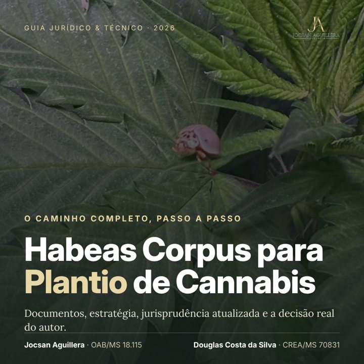

Habeas Corpus para Plantio de Cannabis — Guia completo
Jocsan Aguillera · Douglas Costa da SilvaDezesseis capítulos sobre o habeas corpus preventivo para cultivo medicinal: a base legal (Lei 11.343/2006, Constituição, RDC da ANVISA), o que o STF decidiu sobre a quantidade para uso pessoal, o que o STJ vem decidindo sobre o salvo-conduto, os documentos médicos e agronômicos que sustentam o pedido, as associações de pacientes, e o passo a passo para se preparar. Com anexos: checklist, esqueleto de petição e fontes.
- 52 páginas, PDF com impressão liberada
- Linguagem para pacientes e familiares, com o rigor que um advogado exige
- Decisão judicial real reproduzida, com dados pessoais ocultados, para mostrar como um juiz fundamenta a ordem
Bônus 1Comprar e importar cannabis com receita no Brasil: requisitos e caminhos legais
Bônus 2Tráfico privilegiado: o risco que o salvo-conduto evita
Bônus 3Como criar uma associação de pacientes
R$ 69,90ou 12x de R$ 7,23 · Pix, cartão ou boleto
Comprar o guia + 3 bônus
Acesso imediato · 15 dias de garantia incondicional pela Hotmart